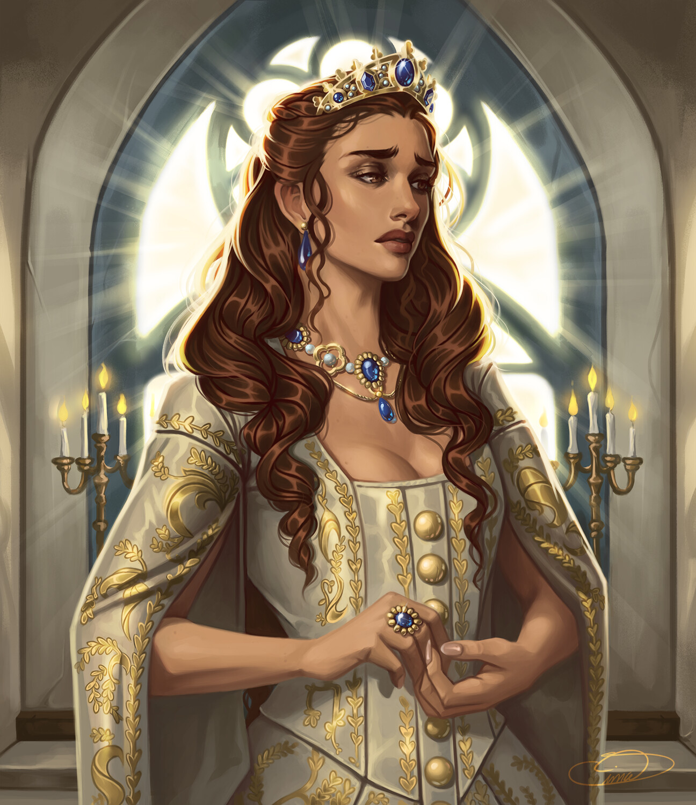

Adrasteia, também conhecida como Júpiter XV, é o segundo por distância, e o menor dos satélites de Júpiter do Grupo Amalteia. Ele foi descoberto com fotografias tiradas pela Voyager 2 em 1979, sendo o primeiro satélite natural a ser descoberto com imagens tiradas com uma sonda interplanetária, em vez de imagens por telescópios.
Além de também estar presente na mitologia grega como uma ninfa que foi responsabilizada com a nutrição, por Reia, do bebê Zeus, em segredo na Caverna Dicteia, para protegê-lo de seu pai, Cronos. A tragédia Reso, não mais atribuída a Eurípedes, faz Adrasteia filha de Zeus, ao invés de sua babá.
